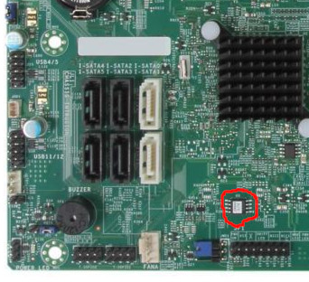

Supermicro X9SAE and X9SAE-V
This page describes how to run coreboot on the Supermicro X9SAE and X9SAE-V
Flashing coreboot
Type |
Value |
|---|---|
Socketed flash |
occasionally |
Model |
W25Q128FVSG |
Size |
16 MiB |
Package |
SOIC-8 |
Write protection |
no |
Dual BIOS feature |
no |
Internal flashing |
yes |
The flash IC is located between the PCH and the front panel connector, (circled) sometimes it is socketed.

How to flash
Unlike ordinary desktop boards, the BIOS version 2.00 of X9SAE-V does not apply any write protection, so the main SPI flash can be accessed using flashrom, and the whole flash is writable.
Note: If you are going to modify the ME region via internal programming, you had better disable ME functionalities as much as possible in the vendor firmware first, otherwise ME may write something back and break the firmware you write.
The following command may be used to flash coreboot. (To do so, linux kernel
could be started with iomem=relaxed or unload the lpc_ich kernel module)
Now you can flash internally. It is recommended to flash only the bios
region (use --ifd -i bios -N flashrom arguments), in order to minimize the
chances of messing something up in the beginning.
The flash chip is a SOIC-8 SPI flash, and may be socketed, so it’s also easy to do in-system programming, or remove and flash externally if it is socketed.
Difference between X9SAE and X9SAE-V
On X9SAE PCI-E slot 4 is absent. Lane 9~16 of PCI-E slot 6 on X9SAE are wired to slot 4 on X9SAE-V. Unlike ASUS P8C WS, there is no dynamic switch on X9SAE-V, so on X9SAE-V slot 6 can work as x8 at most.
On X9SAE-V device pci 01.1 appears even if not defined in devicetree.cb, so it seems that it shall not appear on X9SAE even if it is defined.
Working (on my X9SAE-V)
Intel Xeon E3-1225 V2 with 4 M391B1G73BH0-YK0 UDIMMs, ECC confirmed active
PS/2 keyboard with SeaBIOS 1.14.0 and Debian GNU/Linux with kernel 5.10.46
Use PS/2 keyboard and mouse simutaneously with a PS/2 Y-cable
Both Onboard NIC
S3 Suspend to RAM
USB2 on rear and front panel connectors
USB3
Integrated SATA
CPU Temp sensors (tested PSensor on GNU/Linux)
LPC TPM on TPM-header (tested tpm-tools with TPM 1.2 Infineon SLB9635TT12)
Native raminit
Integrated graphics with libgfxinit
Nvidia Quadro 600 in all PCIe-16x slots
Compex WLM200NX (Qualcomm Atheros AR9220) in PCI slot
Debug output from serial port
Untested
EHCI debugging
S/PDIF audio
PS/2 mouse
Technology
Northbridge |
|
Southbridge |
bd82x6x |
CPU |
model_206ax |
Super I/O |
Nuvoton NCT6776F |
EC |
None |
Coprocessor |
Intel Management Engine |